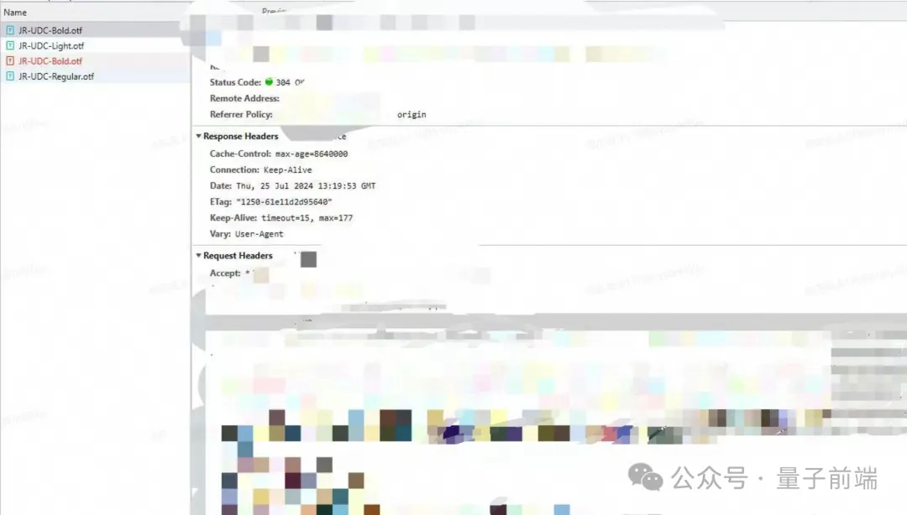

其实这里背后的原因 很简单就是，我们没有提前加载字体包，导致进入页面使用到了字体然后进行网络请求，但由于网络请求需要一段时间向服务端获取资源，这段时间前端页面会使用默认字体，此时从默认字体转化为请求的字体就出现闪烁。
@font-face {
font-family: "JD-UDC-Bold";
font-display: swap;
src: url("./JD-UDC-Bold.otf");
}
| 属性值 | 描述 |
|---|---|
| auto | 默认值。浏览器根据情况决定如何处理字体显示。 |
| block | 在字体加载完成之前，使用占位符进行显示，避免文本闪现或导致布局变化。 |
| swap | 在字体加载完成之前，使用与自定义字体相似的系统默认字体进行显示，保持整体布局的稳定性。 |
| fallback | 在字体加载完成之前，使用与自定义字体相似的系统默认字体进行显示，并在加载完成后切换为自定义字体。 |
| optional | 优先显示系统默认字体，在自定义字体在加载期间可用时切换为自定义字体。 |
在下给大家提供两种方案
此方案也是当前生产上正在使用的方式，使用 JS 提供的内置 API FontFace 进行请求
async loadFund () {
const fontList = ['JR-UDC-Bold.otf' , 'JR-UDC-Light.otf'] // 定义字体文件名称
for(const fontResolveUrL of fontList){ // 循环字体文件名称
if(typeof FontFace !== 'undefined'){ // 适配低版本 不支持 FontFace 的情况
const fontInstance = new FontFace(fontResolveUrL.replace(/.otf/ , '') , `url(../fonts/${fontResolveUrL})`) // 如果浏览器支持 FontFace 则创建实例
await fontInstance.load() // 开始加载字体
}else{
// 不兼容 可以手动发送一个 get请求 请求服务器资源
}
}
}
setTimeout(loadFund , 500)// 使用 异步加载不要影响页面的FCP
以上代码主要的逻辑时以下几点:
定义异步函数
循环加载字体
判断浏览器是否支持 FontFace，不支持可以走 else 手动获取服务器资源
当你使用 FontFace 对象加载的时候，其实内部帮你发送网络请求，获取服务器资源。
FontFace 的参数
new FontFace('字体名称', '字体资源路径', '选项描述') ，详细信息你可以参考FontFace MDN
@font-face {
font-family: 'MyFont';
src: url('path/to/your/font.woff2') format('woff2'),
url('path/to/your/font.woff') format('woff'),
url('path/to/your/font.ttf') format('truetype');
font-weight: normal; font-style: normal;
}
闪烁的问题来源于字体没有被加载，当被加载之后 css 渲染解析时，可以直接获取到资源，无需等待网络请求缓冲过程。